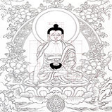

绘制
1
选布

画布一般是浅色画布，不要太厚太硬，画布太厚太硬容易使颜料剥落和皱裂。最合适的画布是织工细密的纯白府绸或棉布，没有图案的白丝绸做画布也非常合适。有的唐卡尺幅很大，只能把几块画布用非常细密的针脚缝合在一起，缝好的两块布的接缝不能有碍于唐卡画面的完整。
2
固定画布
沿画布的四边把它缝在一个细木画框上（画框的四条框都是用和普通铅笔粗细差不多的树枝制成），把细木画框上的画布绷紧，再用结实绳子把细木画框牢牢地绑在大画架“唐卓”上面，按“之”字形的绳路式样把细木画框的四个边同大画架的四个边绑在一起。
3
上胶和打磨
首先在画布上涂上薄薄一层胶水作为“底色”，然后晾干。涂淡胶的目的是防止画布吸附，渗入颜料；防止颜料在画布上“变花”，使颜料涂上面布对不会失掉本色。此后，再薄涂一层有石灰的浆糊。等第二层涂料干后把画布铺到木板或桌面之类的平坦地方，用一块玻璃或贝壳、圆石等光滑的东西反复摩擦画布面，一直到画布的布纹看不见时为止。
4
矫正画布
正其经纬
6
勾草图

用炭笔画出佛像的素描草图“白画”之后，再用墨勾成墨线（墨线草图即线描草图称“黑画”）。

8
勾线
把上面所说的部分画完后，用金色画衣服上的图案（这些金色图案称“金画”）。一些画面装饰和画面其他地方也用各色线条来勾边。
9
开脸

开眉眼包括画眼睛、嘴唇、鼻孔、手足指甲等，是唐卡绘制过程中最后一道工序，也是最重要的一步，一幅唐卡的成败，往往取决于眉眼开得是否成功。所以部分老艺人将开眉眼的功夫当作绝技，单脉相传，不轻易示人。按传统习俗，开眼要选良辰吉日。开好眉眼，就能起到画龙点睛的作用，同时预示着一幅唐卡的最终竣工。